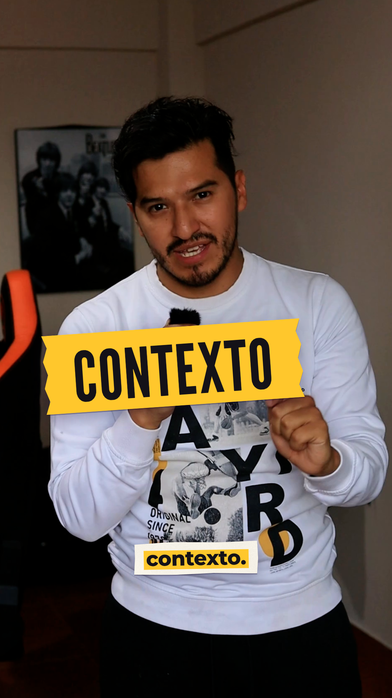
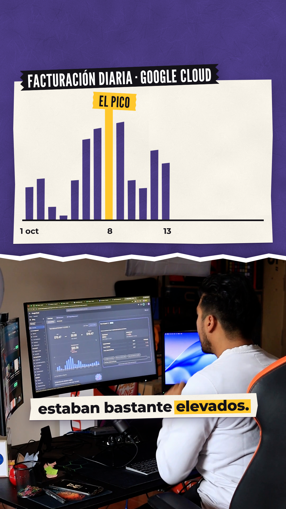
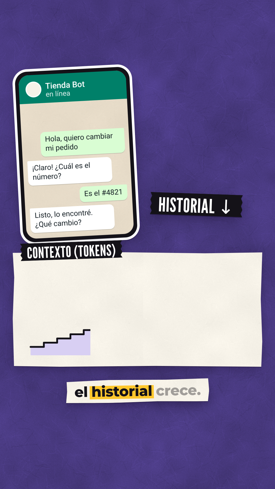
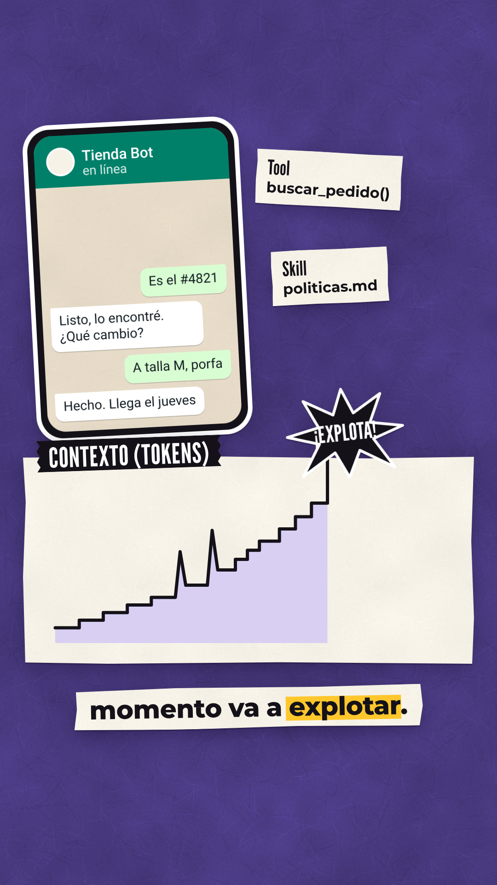
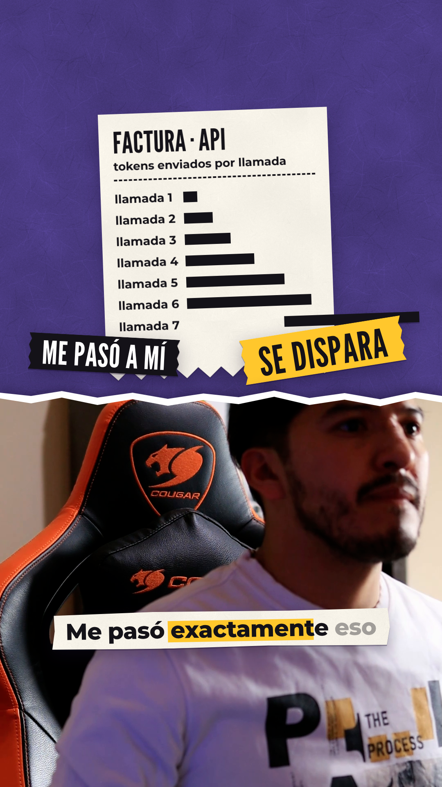
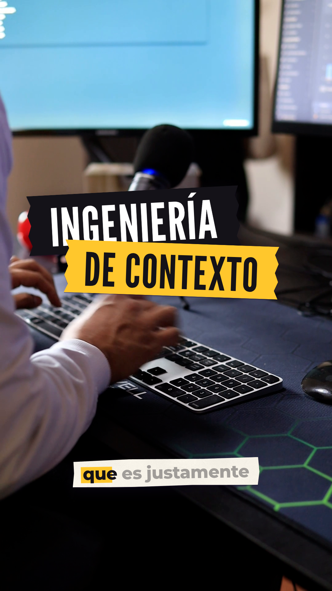
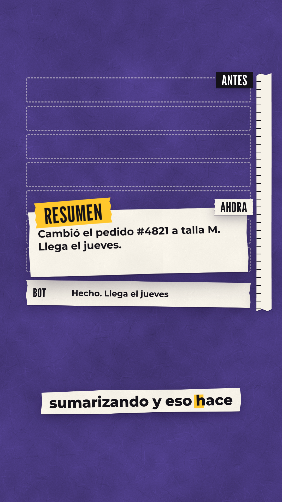
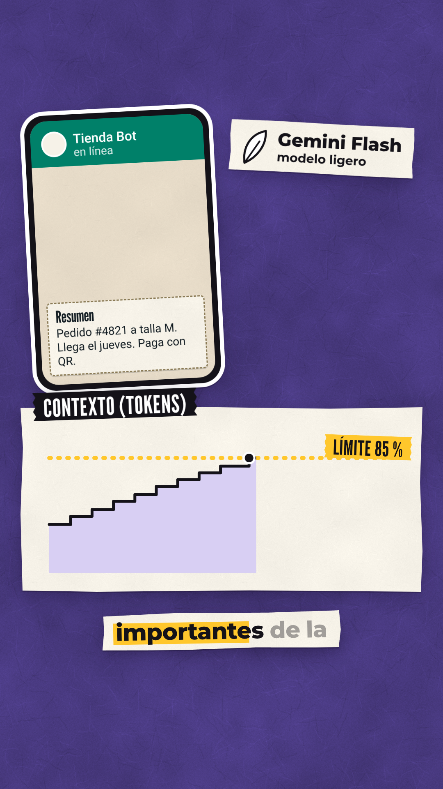
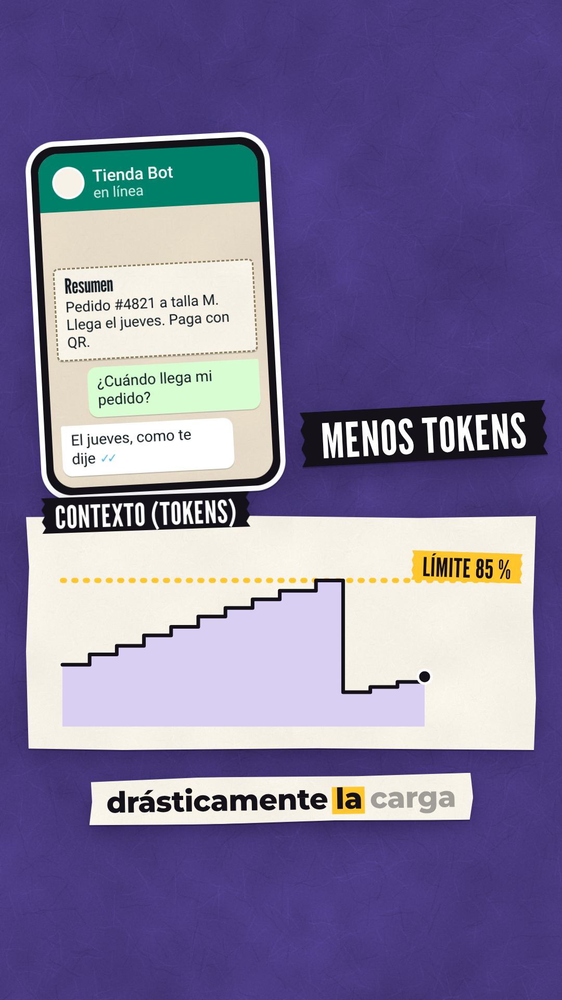
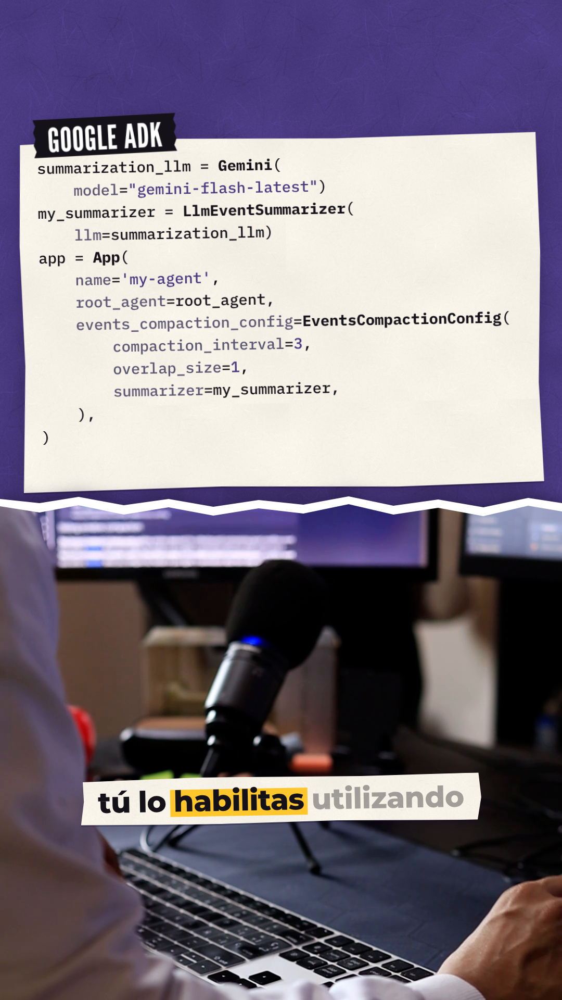
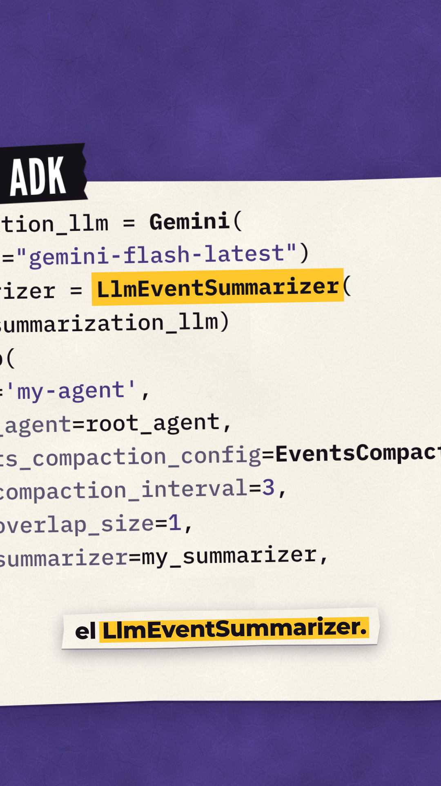
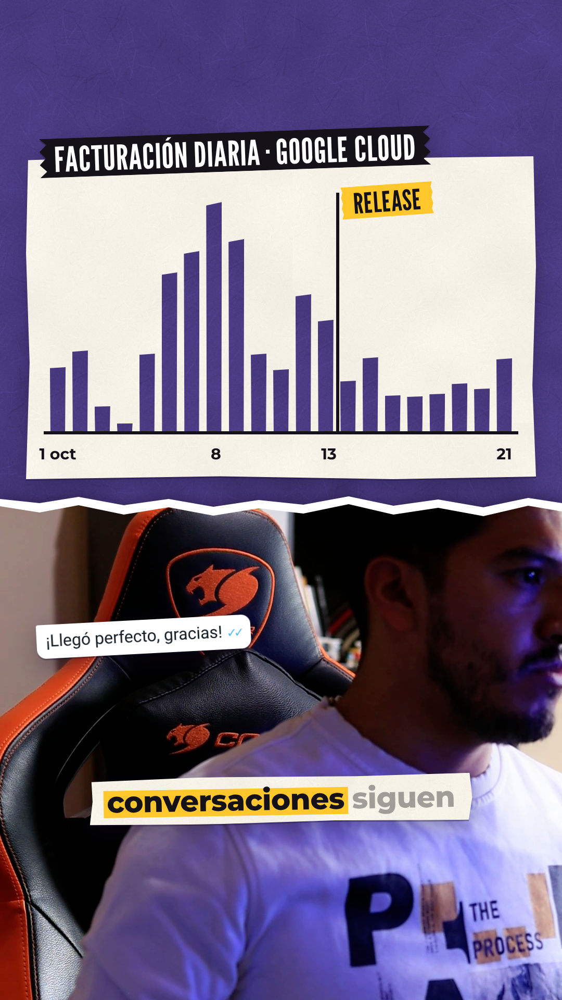
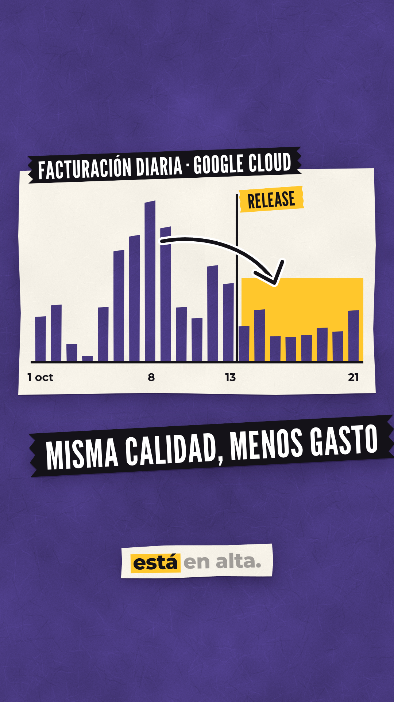
Reel 9:16 · 93,2 s · paper cut · sin CTA: termina en "ya no está en alta". Tiempos anclados a las palabras de la voz en off (empieza en 7,3 s). Cada still es la composición real (fuentes, colores y footage reales) en el momento clave del plano; el movimiento se anima después de tu OK.
token_threshold; tu snippet usa
compaction_interval=3 (cada 3 invocaciones). ¿Lo dejo tal cual o sumo la línea?











